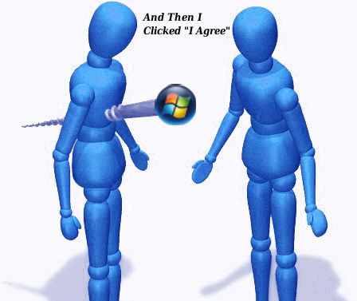

The Thin Line Between "Victim" and "Idiot"
By Ken Starks
This is not meant for Linux users' consumption. Rather, it is meant to be passed along to your friends who still use Windows. It has some irrefutable arguments within.

Idiot...
That's a fairly strong word. I can't think of a situation where most people would not find it offensive.
Or rude.
Let me tell you something else that is rude; the offensive part I will leave to personal opinion.
Asking a friend to repeatedly fix your computer.
Not "fix" as in "something inside the computer broke" - like a hard drive, or a power supply.
I'm talking about your forays into Myspace and astalavista.box.sk.
I'm talking about having to repeatedly clean the garbage off your computer so it will run halfway decently again.
You seem to have no shame when it comes to this.
I personally stopped "fixing" Windows computers three years ago. That included my wife's computer. Ahem... now my ex-wife, but that goes a bit farther than the scope of this discussion.
See, many of us have found a way to run our computers where we don't have to worry about that crap anymore.
Ever.
Many of us have told you of this miraculous operating system and have gone as far as to offer to install it on your computer for you... free of charge.
For many of us, the motive is far from altruistic.
We're sick of cleaning up your messes. If we install GNU/Linux and free software on your computer, we simply won't have to be bothered again. I don't speak for all Linux users, but enough of them to hear the applause in the background.
And trust me, it is a bother, whether we verbalize it or not.
In 2004, a variant of the Sasser worm infected my three-city network, and, by the time the dust settled, had cost me $12,000.00 in business. My machines were fully protected and fully patched. See, that's the problem with Windows exploits. These viruses and worms mutate quicker than the anti-virus software makers can issue the fixes. In my case, Symantec was 72 hours away from fixing this variant. I was one click away from disaster.
It's convenient to blame the virus writers and anti-virus software makers, but ultimately it is your fault that you get this crap on your machine. You are using a system that not only allows it: It fosters it. Let it be known that, by reading further, you will learn that you have a choice in how you operate your computer. A free-as-in-cost and free-as-in-no-restrictions choice.
You will no longer be able to identify yourself as a victim.
The cost I incurred was in business loss. Today's viruses are not in it for the mischief: They are in it for the money.
These people are not going to stop. They are stealing billions of dollars a year by infecting your computers. There is too much money in this for them to even think about taking a break. What's worse, they are operating out of Russia and Nigeria for the most part: We can't get to them, to stop them.
Yeah. It's not going to happen to you, is it?
Right.
It wasn't going to happen to me either.
Linux is an alternative operating system much like Microsoft Windows -- and no, it's not a "program". "Programs" run within an operating system. Think of it as a walnut. The shell of the walnut is your operating system. The goods within the walnut shell are the programs.
I'll not bore you with the details. If you are interested in finding out why Linux is safer and better, you can go here, here and here. There is a fairly comprehensive explanation as to why you don't need anti-virus software here. Here is an article from a long-time Mac and Windows user who has seen the superiority of Linux, and has put it on his own computer.
But this isn't a lesson on computer usage.
It's a wakeup call for common sense.
Did you know that most computer repair shops, once they "repair" your system, project future profits based on the fact that you use Microsoft Windows? They know for a fact that you are going to need them again in six months.
They put their kids through private schools and upper-crust colleges because you are a Microsoft Windows User and are not able to adequately protect your computer.
It's getting harder and harder to do so. And don't look to Windows 7 for your salvation: You will still need to load your system with the same anti-virus garbage and registry cleaners you did with XP and Vista. There's an even-money chance that they are going to fail anyway. So you've paid for what?
There is however, a thin line between being a victim and being an idiot. If you do not know you have a choice and bad things happen to you, then you are a victim.
If you know you have a choice and still insist on personally using a system over and over again that will ultimately lead to the same problems....
I think the descriptor of idiot is fair.
You disagree? You know that Windows is the problem...you know that it's just a matter of time before you have to do it all over again. You know you have an alternative, but you insist on putting the source of the problem back on your computer. You may be uncomfortable with the term "idiot": You give me another name for it, then.
And if you have to use it at work, I understand. Unfortunately, as flawed as it is, it is still a Windows world. The good news? Slowly but surely, businesses across the globe are making the switch. Even those that are not yet Linux companies are letting some employees run their choice of operating systems on their work computers. That choice is Linux.
Look. Here is the way it is.
When you buy a new computer, chances are it will have Microsoft Windows on it. That didn't come free: The price of the computer is jacked up anywhere from $100.00 to $300.00 to pay Microsoft. It's known as the Microsoft Tax. Microsoft has entered into deals with many of the computer manufacturers to ensure that Windows is on about every machine they sell. The kicker here? Those agreements are secret and you and I cannot see them. We've written about this before.
Microsoft has a virtual monopoly on new computer sales.
Now there are independents such as zareason.com that sell nothing but GNU/Linux computers, and they are great folks to deal with. In fact, I have never encountered service like what Earl and Cathy Malmrose provide -- and, for the most part, they provide it for free. Dell has also begun selling Linux computers. Do you think Dell would sell a system on their machines that would cause them to lose money or damage their reputation?
When you call Microsoft for support, the first thing they ask for is a credit card.
So, suppose you have bought a new computer and here comes the first 90 days: You start getting pop-ups saying your anti-virus protection is about to expire and that, if you want to continue to "be protected", you need to renew your subscription.
What?
Yep, now some anti-virus companies go an entire year before they expire but still: Eventually, you are going to be frightened into shelling out more money in exchange for your peace of mind.
In other words, you have to purchase software to ensure that the software you've already purchased is going to work. Did you read that carefully? And you are okay with that?
If I did that, I'd be in jail by now... and so would you.
Linux amputates that part of the computing experience completely. Some people cannot get their heads around the fact that they don't need to pay this extortion fees anymore. You have no idea what a sense of liberation this brings. Now some of you are sure to comment:
"I've run Windows for years without a problem."
Congratulations. You wanna Google it and see how many others have not? I suppose as long as your computer is okay, then all is right with the world.
We can open almost any attachment without fear. We can visit Web sites that will bring a Windows machine to its knees -- and we don't notice anything. And please, don't be foolish and say that Linux is too hard for the normal Windows user. We have 10 and 12 year-olds picking it up in a couple of hours: They never look back. Entire nations have already switched or are in the process of switching to Linux. Many countries in Asia and South America have made the switch. India is booting out Microsoft in their schools and migrating to Linux, as we speak.
So. You've been told. You do have a choice, and it doesn't cost you one thin dime. If you choose not to at least look into it, and trust me, most of you won't, don't ask us to come fix your infected computers.
We know which side of that thin line you stand on.
EDIT: A friend of boh was kind enough to send us this faux-sign...just
seemed to fit the theme of the day.
[ While a long-time GNU/Linux user myself, I would add that there's something to be said about a product's built-in security features. Most operating systems, and the software running on top of them, have bugs that need to be reported, fixed and patched. Few users realise the effort behind this process, and rely on the automatic updates they receive. (This is true for many users of free software and proprietary software alike.) Measuring the security record of a computer system depends on a lot of additional factors, not only on the operating system alone. Attackers concentrate on common OS types that are well accessible. Currently, this is Microsoft Windows. Tomorrow, it could be a different OS. This does not mean that other platforms do not need any protection at all - on the contrary: All systems require a thoughtful and well-planned deployment, when it comes to security. -- René ]
Talkback: Discuss this article with The Answer Gang
Ken Starks is the Founding Director of The HeliOS Project. The HeliOS Project rebuilds computers to current technology standards and gives them to financially disadvantaged children in the Central Texas area. He lives in Austin, Texas and has been active in other projects such as Lindependence and The Tux500 project. Ken is a long-time advocate for the Linux Desktop and has made it the top priority in his life. The HeliOS Project is entering its fifth year in May of 2010 and to date, this effort has provided just over 1000 computers to those that need them most. Ken outlines the mission of his Texas non-profit in simple terms:
"A child's exposure to technology should never be predicated on the ability to afford it."